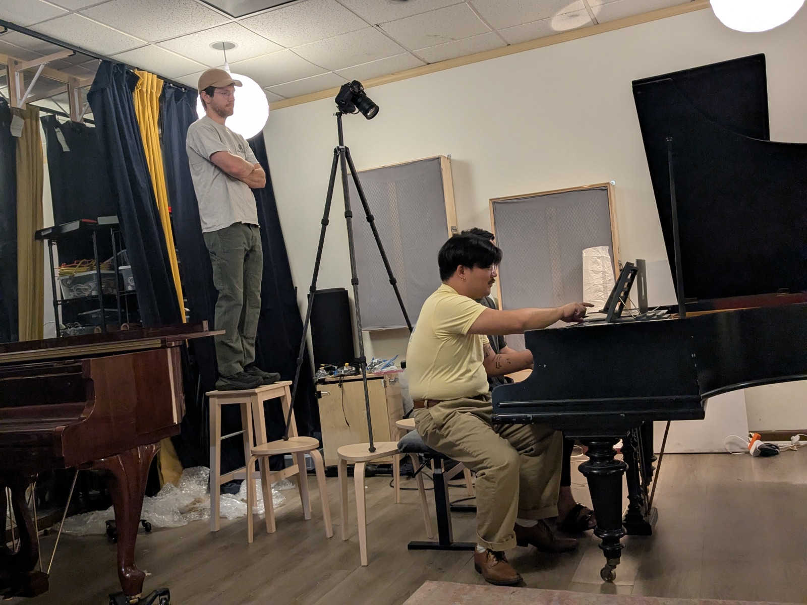
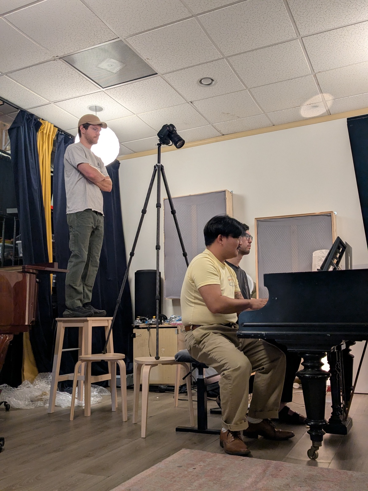
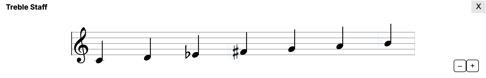
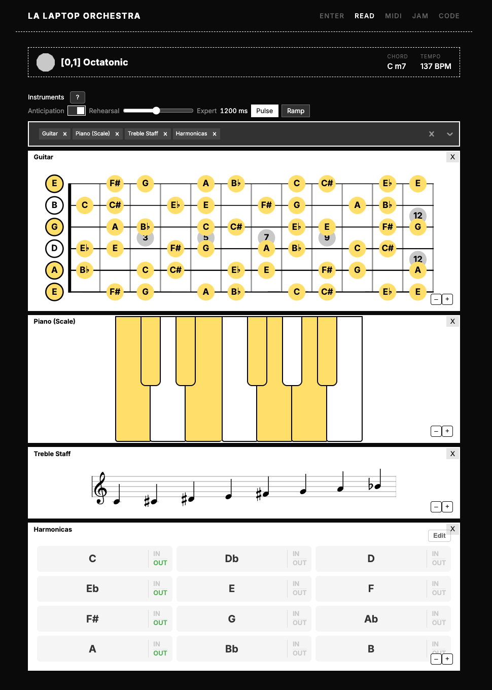
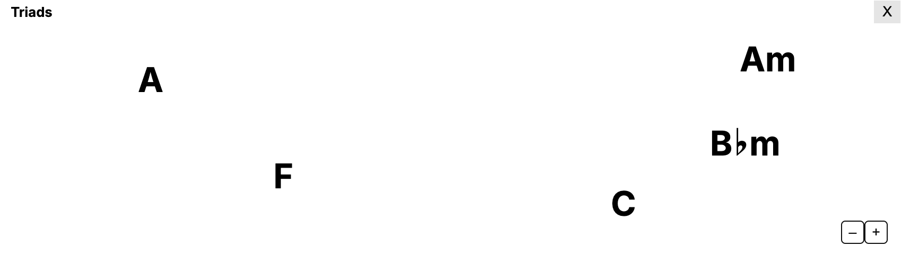

Role · Designer & developer
For · LA Laptop Orchestra
Platforms · Web · React / Firebase
LA Laptop Orchestra performs from a shared screen score. Everyone in the room reads live notation on their own device (piano, fretboard, staff, harmonica) while a conductor moves the ensemble through a network of scales. When the harmony changes, every screen updates.
That update used to be instantaneous. Click, swap.
Eye-tracking studies of sight-reading (Furneaux 1999, Truitt 1997) show that musicians read about one second ahead of what they're playing, roughly one measure. That preview buffer is where sight-reading actually happens. An instant swap overwrites it without warning: the notes you'd already read are gone, and you're reacting instead of anticipating.
I watched this break in person. Two pianists spent an afternoon composing and sight-reading miniatures from the system, and after the first take one of them put the problem into words:
"It's weird because we're holding a chord and when we move on, it immediately plays the next thing — just, immediately, flash."
The other proposed the fix in the same breath: you switch, we finish the chord, "and then you have ten seconds… and then it's in." Sitting at the piano, they had spontaneously designed a preview window. The interface had been built for solo exploration, where instant feedback is exactly right; nobody had designed it for sight-reading. The system below shipped over the following two days.


The session that started it: two pianists composing and sight-reading miniatures from a live screen score.
Before designing anything I compiled two research bibliographies (screen-score notation practice and game UX timing, 217 sources) and used them to eliminate the obvious approaches:
A scrolling score (Guitar Hero-style) gives spatial lookahead, but scrolling shrinks the reader's perceptual span (Harvey 2019), and harmonic navigation isn't strictly linear in time. Color-only signals fail because color changes don't capture peripheral attention: if you aren't looking directly at the changing note, you miss it (Yantis 1988). An audio countdown tick competes with the music being played. A 3-2-1 overlay occludes the notation and asks the performer to read digits when the visual system judges time-to-arrival far better from motion.
Iteration
The system that survived: every note on every instrument exists in one of four states: Off, On, Incoming, and Outgoing. When the next scale is queued, arriving notes pulse blue and departing notes desaturate and fade, for a configurable lookahead window, and then the score commits. Idle, preview, commit.
Two animation styles ship side by side (Pulse and Ramp) because I couldn't resolve from research alone which reads better mid-performance. That's an A/B test to run with the ensemble, not a decision to fake.
A queued scale change in the performer view: incoming notes pulse blue, outgoing notes fade, and the change commits when the countdown expires.
Design decision
The asymmetry is deliberate. Motion captures peripheral attention automatically; color change alone doesn't. A performer staring at their left hand still catches a pulsing key at the edge of vision. Departing notes only fade: you don't need to react quickly to a note you were already leaving.

On the staff, only the altered accidentals animate. The rest of the notation holds still so the reader's place is never disturbed.
Design decision
It depends on the player. Rhythm games solved this years ago: osu! lets experts shrink their approach window to 300ms while beginners get nearly two seconds. I borrowed the pattern: five presets from Rehearsal (2000ms) down to Expert (300ms), plus a free slider, saved per performer. A first-time participant and a professional sight-reader share the same room and the same score with different amounts of warning.

The performer view: anticipation toggle, lookahead presets, Pulse/Ramp style, and every notation renderer sharing one state machine.
Design decision
Rolling the system out across nine renderers exposed the general rule. The piano was easy: a key is a stable object that can pulse. The triad view wasn't: it regenerated its whole layout on every change, so an incoming triad had nowhere to arrive.
Good anticipation needs object constancy. Every renderer needs a stable visual object (a key, a fret location, an accidental slot, a persisted coordinate) that survives the transition and can carry the animation. I redesigned the triad view around coordinates assigned at birth that persist for the life of each triad. What started as an animation pass turned into a rule about visual identity.

The redesigned Triad Field: each triad keeps its coordinate for its whole life, so arriving and departing triads have a place to animate from.
Design decision
An ensemble is many devices with many clocks. A server-side queue with a shared commit timestamp would need clock-skew correction across every phone in the room. Instead, each device receives the new harmony immediately and delays the commit locally by its own lookahead. Per-performer timing falls out for free, and MIDI output follows the same delayed commit, so what you hear stays matched to what you read.
The system shipped across all nine notation renderers in the performer app (piano, staffs, fretboards, flute, harmonica grid, and the abstract chord views) with one shared state machine underneath. The next LALORK performance, August 15 in Los Angeles, is the field test: a room full of strangers sight-reading harmonic changes they've never seen.
Plenty is unfinished. A Staged mode, where a conductor holds to preview and releases to commit, is specced but unbuilt. The Pulse-versus-Ramp question stays open until performers vote with their settings. And the preset timings are educated guesses from rhythm-game data until August 15 says otherwise.
Scale Navigator Dashboard — the conductor's interface driving the room's harmonic state
Ensemble Jammer — the networked instruments this grew out of